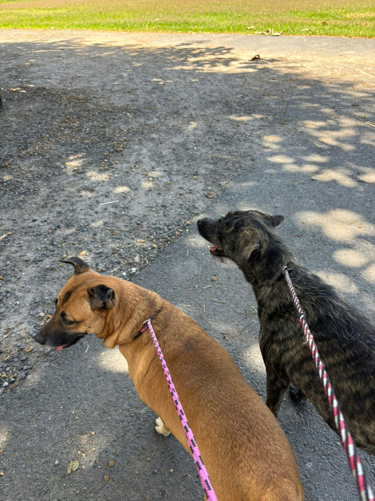

PASEOS
Juntos cambiamos sus vidas paso a paso

Muchos de nuestros perritos están aprendiendo a confiar de nuevo. Salir a caminar reduce su estrés, fomenta su socialización y les regala su momento favorito del día.
HORARIOS
¡Todos los días!
Requisito: Mayor de 18 años con DUI vigente, paciencia y respeto al ritmo de cada perrito.